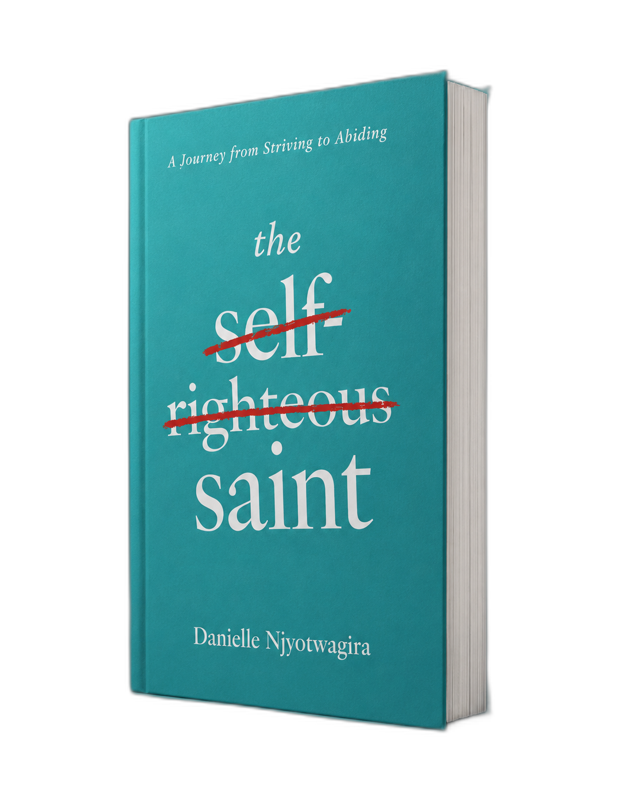

"What if the greatest obstacle between you and God isn't your failure — but your performance? Danielle writes with rare honesty about the exhausting treadmill of spiritual striving, and the radical grace waiting on the other side."

"I do not set aside the grace of God; for if righteousness comes through the law, then Christ died in vain."
Galatians 2:21
About the Author
You are probably visiting this page because you'd like to learn a little more about me.
My name is Danielle Nicole Niyotwagira. I am a wife, a mother to two wonderful little girls, and a teacher specializing in special education.
Over the years, I have learned that you do not need to be fearless or have a perfect plan to move forward. You simply have to decide that where God is leading you is greater than the fear trying to hold you back.
My hope is that this book sparks something within you and helps you allow Christ to transform the way you understand His grace — reminding you that His grace truly is enough.